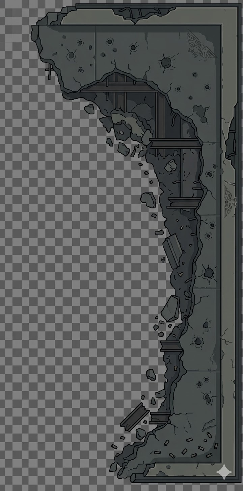

Side-by-side comparison of current in-game SVG terrain vs hand-drawn SVG experiments. Goal: see if pure SVG can produce acceptable grimdark ruins.

L-shaped ruin with: stone block walls, jagged broken edges with rubble, bullet holes/craters, pillars, imperial eagle motifs, structural beams visible in broken sections. Transparent background.
This is what we're trying to achieve — either via SVG or AI image generation.